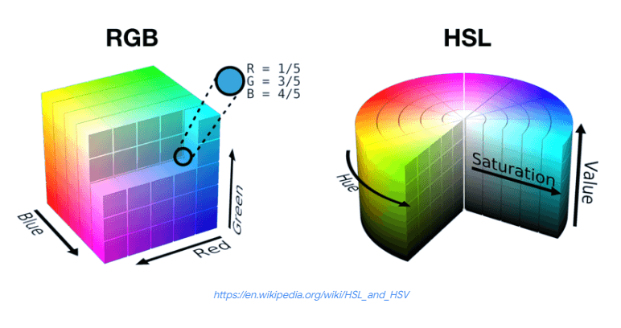
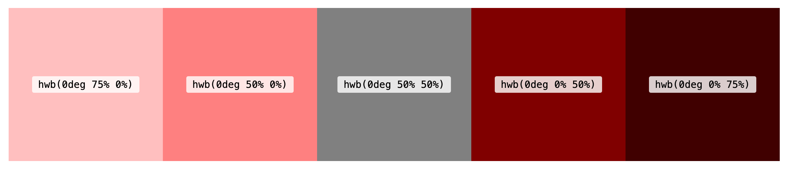
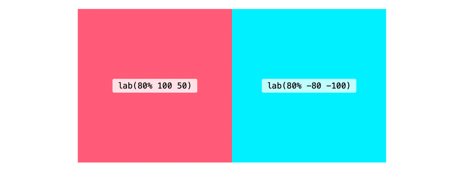

Модульная сетка
Состоит из прямоугольников с заданной шириной и высотой. Строится на пересечении колонок и строк вертикального ритма

Лекция 5: CSS_2
Вертикальный ритм — это концепция, пришедшая из полиграфии. Мы пытаемся сохранить на странице вертикальное пространство между элементами, согласованными друг с другом
Верстка вертикального ритма — это, в первую очередь, правильная расстановка текста, изображений и других элементов по базовой сетке
Этот текст состоит из строчных блоков
p {
display: inline;
padding: 20px;
background-color: rgba(0, 195, 255, 0.432);
}
Этот текст состоит из строчных блоков
p {
display: inline;
padding: 20px;
background-color: rgba(0, 195, 255, 0.432);
}
Этот текст состоит из строчных блоков
Эта разница в виде свободного пространства распределяется сверху и снизу от отображаемых глифов
p {
font-size: 18px;
line-height 1.5;
}
Интерлиньяж = (font-size / line-height) / 2
При прочих отсутствующих значениях, высота строчного блока равна значению line-height
p {
font-size: 18px;
line-height 1.5;
}
p {
font-size:1em;
margin-top: 1.5em;
margin-bottom: 1.5em;
}
body,div,dl,dt,dd,ul,ol,li,h1,h2,h3,h4,h5,h6 {
margin:0;
padding:0;
}
Сетка базовых линий позволяет отследить вертикальные расстояния между объектами в дизайне
«Структурируя при помощи модульной сетки плоскости и пространство, дизайнер получает возможность организовать тексты, фотографии и графические изображения по принципам объективности и функциональности. Логично организованный дизайн поддерживает достоверность информации и располагает к ней читателя»
Сетка — основа современного веб-дизайна. Сетки помогают читателю воспринимать текстовую и визуальную информацию
Построим свою сетку
Пример адаптивных сеток:
Состоит из прямоугольников с заданной шириной и высотой. Строится на пересечении колонок и строк вертикального ритма
1pt = 4/3 физических пикселей
При разрешении «2x» (@2x) 1pt = 4 пикселя, поскольку разрешение удваивается по осям X и Y, что делает его шириной 2 пикселя и высотой 2 пикселя.
Типографика — это набор правил, касающихся визуальных аспектов: структуры, внешнего вида и стиля шрифта
Шрифт — это набор символов, которые связаны между собой единым оформлением
Гарнитура — это семейство шрифтов, схожих по стилю и различающихся по начертанию
Контрастность — разница между горизонтальными и вертикальными штрихами
Насыщенность определяется толщиной букв
Варьируются от узких до широких
font-family: Arial, sans-serif
font-family: Cambria, serif
Апертура — «открытость» знака
font-family: Arial, sans-serif
font-family: Cambria, serif
Всегда нужно смотреть, как шрифт отображается на разных устройствах, носителях, как он выглядит на печати или при разных расширениях интерфейсов
При выборе шрифтовых пар важно избегать конфликта, то есть ситуации, когда шрифты слишком похожи или слишком разные, чтобы вместе выглядеть гармонично
p {
font-family: Arial;
}
Веб-безопасные шрифты — обычно доступны во всех системах
p {
font-family: "Open Sans", Verdana, sans-serif;
}
p {
font-size: 24px;
}
font-size наследуется от родительского элемента
p {
font-style: normal;
}
p {
font-weight: 500;
}
p {
text-transform: uppercase;
}
p {
text-decoration: underline;
}
p {
text-align: center;
}
Задает высоту каждой строки текста
p {
line-height: 1,2;
}
p {
letter-spacing: 10px;
word-spacing: 20px;
}
Шрифты устанавливается с помощью свойств font-family
.p {
font-family: "Open Sans", Verdana, sans-serif;
}
@font-face — директива для одключения нестандартных шрифтов
@font-face {
font-family: "Roboto";
src: url("Roboto.woff");
}
p {
font-family: "Roboto", Arial, san-serif;
}
@font-face {
font-family: "Roboto";
src:
local("Roboto"),
url("Roboto.woff2") format("woff2"),
url("Roboto.woff") format("woff"),
url("Roboto.svg") format("svg");
}
@font-face {
font-family: "Roboto Bold";
src: url("Roboto-Bold.woff2") format("woff2")
}
@font-face {
font-family: "Roboto Regular";
src: url("Roboto-Regular.woff2") format("woff2");
}
.block1 {
font-family: "Roboto Bold", Verdana, sans-serif;
}
.block2 {
font-family: "Roboto Regular", Verdana, sans-serif;
}
@font-face {
font-family: "Roboto";
src: url("Roboto-Bold.woff2") format("woff2");
font-weight: bold;
}
@font-face {
font-family: "Roboto";
src: url("Roboto-Regular.woff2") format("woff2");
font-weight: normal;
}
.block1 {
font-family: "Roboto", Verdana, sans-serif;
font-weight: bold;
}
.block2 {
font-family: "Roboto", Verdana, sans-serif;
font-weight: normal;
}
Бесплатные дистрибутивы шрифтов: предоставляют бесплатные шрифты для скачивания (могут существовать некоторые условия лицензии, например, указание разработчика шрифта). Например: Font Squirrel, dafont, Everything Fonts
Платные дистрибутивы шрифтов: предоставляют платные шрифты, например, fonts.com или myfonts.com. Можно также приобрести шрифты непосредственно у производителя шрифтов, например Linotype, Monotype или Exljbris.
Сервисы онлайн-шрифтов: сайты, которые предоставляют шрифты и упрощающие определенные процессы по скачиванию или подключению шрифтов. Например: Google Fonts
На уровне элементов HTML, всему можно присвоить цвет
span {
color: #222222;
backgroud-color: #fccece;
}
.element {
padding: 24px;
border: 1px solid #222222;
backgroud-color: #fccece;
}
.element {
padding: 24px;
border: 1px solid #222222;
}
CSS-свойство color позволяет задавать основной цвет (foreground color) элемента
h2 {
color: #222222;
}
Полный список стандартных цветов
p {
color: tomato
}
Тест, цвет которого задан с помощью стандартного цвета tomato
Задаются с помощью hex-нотации: #ffffff
p {
color: #5d32ff;
}
Тест, цвет которого задан с помощью hex: #5d32ff
rgb (red, green, blue) — это цветовая модель, где цвета прдставлены тремя значениями в диапазоне 0 - 255 или процентами 0 - 100%
p {
color: rgb(71, 206, 224);
}
Тест, цвет которого задан с помощью rgb: rgb(71, 206, 224)
a — это альфа-канал. Для прозрачности
p {
color: rgba(71, 0, 0, 0.6);
}
Тест, цвет которого задан с помощью rgba: rgba(71, 0, 0, 0.6);
HSL (Hue, Saturation, Lightness) — тон, насыщенность, светлота
HSL (Hue, Saturation, Lightness) — тон, насыщенность, светлота
currentColor хранит значение CSS-свойства color
currentColor хранит значение CSS-свойства color
p {
color: #222;
border: 3px solid;
}
currentColor хранит значение CSS-свойства color
p {
color: #222;
border: 3px solid currentColor;
}
div {
background-color: rgba(0, 0, 0, 1);
}
/* После */
div {
background-color: rgba(0 0 0 / 1);
}
Для того чтобы элемент унаследовал бы цвет от родительского элемента, можно воспользоваться глобальным значением inherit
p {
color: rgba(0, 0, 0, 1);
}
a {
color: inherit;
}
unset позволяет сбросить значение свойства до унаследованного значения в том случае, если свойство естественным образом наследует это значение от родительского элемента
span {
color: unset;
}
Ключевое слово initial говорит браузеру использовать значение по умолчанию для заданного CSS-свойства
a {
color: initial;
}
<a href="#" class="link">
<svg fill="currentColor"></svg>
</a>
.link {
color: #ff0000;
}
Цветовые функции CSS (CSS color functions) — это способ задания цвета в CSS при помощи математических функций, а не простого кода цвета
:root {
--primary-color: blue;
}
span {
color: var(--primary-color);
}
Можно начать с основного цвета, а затем выбрать цвета, дополняющих его:
:root {
--main-color: hsl(180, 100%, 50%);
--secondary-color: hsl(120, 100%, 50%);
--accent-color: hsl(0, 100%, 50%);
}
Цвета должны быть достаточно контрастны, чтобы легко читаться, особенно для людей с недостатком цветового зрения
CSS Color Module Level 4 предоставляет более удобный синтаксис для цветовых функций, который широко поддерживается в браузерах
span {
color: hsl(0 100% 50% / 0.5);
}
hwb означает Hue/оттенок, Whiteness/белизна и Blackness/чернота
 Источник Smashing Magazinelab и lch определены в спецификации, как независимые от устройства цвета. lab использует три оси: яркость, a-axis/ось А (от зелёного к красному) и b-axis/ось Б (от синего к жёлтому)
 Источник Smashing Magazinelch означает Lightness/яркость, Chroma/цветность, и Hue/оттенок
Источник Smashing MagazineЦветовые пространства oklab и oklch были созданы Бьёрном Оттоссоном в 2020 году
hwb(), lab(), lch() и oklch() поддерживается в Chrome, Safari и Firefox
Их можно сразу начинать использовать, предоставив запасной вариант для браузеров, не поддерживающих их
Дизайн-система — набор инструментов и правил, упрощающих проектирование интерфейсов. Включает в себя:
Главный принцип — не делать дизайн-систему, пока в проекте ничего не готово
Дизайн-система — это продукт совместной деятельности дизайнера и разработчика
<img src="my-image.png"">
<img src="my-image.png"">
<img src="image.png" width="100" height="100" alt="описание изображения">
текстовое описание изображения для использования в ситуациях, когда изображение не может быть просмотрено / отображено или отрисовка занимает много времени из-за медленного интернет-соединения
Нужно описать словами, что вы потеряете, если ваше изображение не появится. Какое изображение несет смысл
Главная идея здесь это предоставить нечто полезное, для случая, когда изображения не видны.Указание атрибутов ширины и высоты говорит браузеру о том, сколько оставить места для отрисовки изображения до его загрузки
<svg width="30" height="30">
<path d="..."/>
</svg>
Подходит для декоративных изображений. Есть два способа вставить декоративное изображение: сделать фоном или добавить, как псевдоэлемент
.element {
background-image: url("image.jpg");
}
.element {
background-repeat: no-repeat;
}
.element {
background-size: cover;
}
Псевдоэлементы создают внутри элемента псевдотег, которого нет в разметке сайта